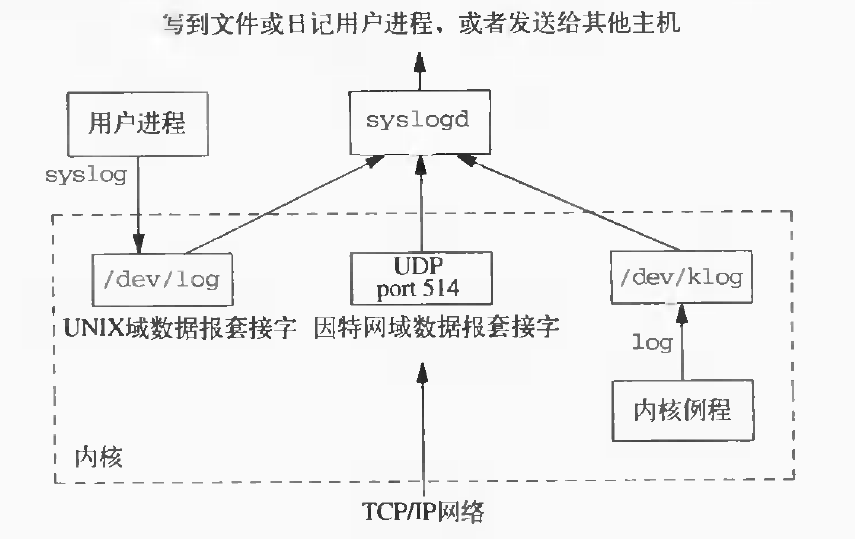

守护进程
守护进程
守护进程_ ：生存期长的一种进程。它们常常在 系统引导装入 时 起动 ，在 系统关闭 时 终止
- 因为它们 没有控制终端 ，所以说它们是在 后台运行 的
UNIX系统有很多守护进程，它们执行日常事物活动 本章说明守护进程结构，以及如何编写守护进程程序 因为守护没有控制终端，需要了解在有关事物出问题时，守护进程如何报告出错情况
特征
在linux下执行 ps 命令观察守护进程，各列标题的意义是： 父进程ID 、 进程ID 、 进程组ID 、 终端名称 、 终端进程组ID (与该控制终端相关的前台进程组)、 用户ID 以及实际 命令字符串
$ pa -axj PPID PID PGID SID TTY TPGID COMMAND 0 1 1 1 ? -1 init [3] 0 2 0 0 ? -1 [kthreadd] 2 3 0 0 ? -1 [ksoftirqd/0] 2 4 0 0 ? -1 [kworker/0:0] 2 5 0 0 ? -1 [kworker/0:0H] 2 7 0 0 ? -1 [rcu_sched] 2 8 0 0 ? -1 [rcu_bh] 2 9 0 0 ? -1 [migration/0] 2 10 0 0 ? -1 [lru-add-drain] 2 11 0 0 ? -1 [cpuhp/0] 2 12 0 0 ? -1 [cpuhp/1] 2 13 0 0 ? -1 [migration/1] 2 14 0 0 ? -1 [ksoftirqd/1] 2 16 0 0 ? -1 [kworker/1:0H] 2 17 0 0 ? -1 [kdevtmpfs] 2 18 0 0 ? -1 [netns]
- 所有 守护进程 都以 超级用户 ： 用户ID为0 的优先权运行
- 守护进程 不拥有控制终端 ：
- 终端名称 设置为问号 ?
- 终端前台进程组ID 设置为 -1
- 缺少控制终端 可能是 守护进程 调用了 setsid 的结果
- 一般 守护进程 都是 进程组的首进程 ， 对话期的首进程
- 这些进程组和对话期中的唯一进程
- 守护进程的父进程 都是 init 进程
编程规则
在编写守护进程程序时需遵循一些基本规则，以便防止产生并不希望的交互作用：
- 首先做的是调用 fork ，然后使父进程 exit 。这样做实现了下面几点:
- 如果该守护进程是由一条 简单shell命令 起动 的，那么使 父进程终止 使得 shell认为这条命令已经执行完成
- 子进程 继承 了 父进程的进程组ID ，但具有一个 新的进程ID ，这就保证了 子进程不是一个进程组的首进程 。这对于下面就要做的 setsid调用 是 必要的前提条件
- 调用setsid 以 创建一个新对话期 。然后执行 setsid 中列举的三个操作，使调用进程:
- 成为 新对话期的首进程
- 成为一个 新进程组的首进程
- 没有控制终端
- 将 当前工作目录 更改为 根目录
- 从父进程继承过来的当前工作目录可能在一个装载的文件系统中，守护进程通常在系统再引导之前是一直存在的
- 如果 守护进程的当前工作目录 在一个 装载的文件系统 中，那么 该文件系统就不能被卸载
- 某些 守护进程 可能会把 当前工作目录 更改 到某个指定位置，在此位置做它们的工作
- 行式打印机假脱机守护进程常常将其工作目录更改到它们的 spool 目录上
- 从父进程继承过来的当前工作目录可能在一个装载的文件系统中，守护进程通常在系统再引导之前是一直存在的
- 将 文件方式创建屏蔽字 设置为 0 ，由 继承得来的文件方式创建屏蔽字 可能会 拒绝 设置 某些许可权
- 若守护进程要创建一个组可读、写的文件，而继承的文件方式创建屏蔽字，屏蔽了这两种许可权，则所要求的组可读、写就不能起作用
关闭 不再需要的 文件描述符
- 这样使守护进程就 不再持有 从其 父进程继承来的某些文件描述符
- 父进程可能是 shell 进程，或某个 其他进程
- 究竟关闭哪些描述符则与具体的守护进程有关
- 这样使守护进程就 不再持有 从其 父进程继承来的某些文件描述符
实例
daemon_init 函数：初始化成为一个守护进程
#include <sys/types.h> #include <sys/stat.h> #include <fcntl.h> #include "apue.h" int daemon_init(void) { pid_t pid; if((pid = fork()) < 0) err_sys("for error"); else if(pid > 0) exit(0); // parent says good bye //child continues setsid(); //become session leader if(chdir("/") <0) // change work directory err_sys("chdir error"); umask(0); // clear file creation mask // @TODO close unnessagry file desciptors return 0; } int main(void) { daemon_init(); for(; ;) pause(); exit(0); }
测试结果：
$ ./src/daemon/daemonize $ ps -axj | grep daemonize PPID PID PGID SID TTY TPGID UID COMMAND 1 16992 16992 16992 ? -1 1001 ./src/daemon/daemonize
由此可见，除了运行的用户ID不是“超级用户”，新创建的新进程完全满足守护进程的特征： 1. 无控制终端 2. 会话组首进程，唯一进程 3. 父进程为init进程
日志
与守护进程有关的一个问题是如何处理出错消息 因为它没有控制终端，所以不能只是写到标准出错输出上 在很多工作站上，控制台设备运行一个窗口系统，所以不希望所有后台进程都写到控制台设备上 也不希望每个守护进程将它自己的出错消息写到一个单独的文件中
对系统管理人员而言，如果要关心哪一个守护进程写到哪一个记录文件中，并定期地检查这些文件，那么一定会使他感到头痛。所以 需要有一个 集中的 守护进程出错记录 机制
syslog机制
自4.2BSD以来广泛地应用了BSD的syslog机制 大多数守护进程使用这一机制
下图显示了 syslog 机制的详细组织结构：

有三种方法产生记录消息:
- 内核例程 可以调用 log 函数。任何一个 用户进程 通过 打开和读 /dev/klog 设备就可以读取这些消息
- 因为无意编写内核中的例程，所以不再进一步说明此函数
- 大多数用户进程( 守护进程 )调用 syslog (3)函数以产生记录消息
- 将在下面说明其调用序列。这使 消息 发送 至 UNIX域数据报套接口/dev/log
- 在此主机上或通过 TCP/IP网络连接 到此主机的某一 其他主机上的一个用户进程 可将 记录消息 发向 UDP端口514
注意：syslog函数并不产生这些UDP数据报文件，它们要求产生此记录消息的进程具有显式的网络编程，在此也不详细描述
通常 syslogd守护进程 读取 三种格式 的记录消息
- 此守护进程在 起动时 读一个 配置文件 。一般其文件名为 /etc/syslog.conf
- 该文件决定了 不同种类的消息应送向何处
- 紧急 消息可被送向 系统管理员 (若已登录)，并在 控制台上显示
- 警告 消息则可 记录到一个文件 中等
- 该文件决定了 不同种类的消息应送向何处
openlog函数
openlog 函数： 打开 日志文件
#include <syslog.h> /** * 打开日志文件 * * ident : 日志消息的前缀字符串，通常为程序名 * option : 日志消息选项 * facility : 日志消息功能分类与严重等级 * * return：无 * */ void openlog(const char *ident, int option, int facility);
openlog是可选择的 如果不调用openlog，则在第一次调用syslog时，自动调用openlog
openlog可以指定一个 ident ，以后此ident将被加至每则记录消息中。ident一般是 程序的名称 (例如，cron、inetd等)
下表说明了4种可能的 option ：
| option | 说明 |
| LOG_CONS | 如果不能够通过unix domain socket传递到syslogd，那么直接输出到控制台 |
| LOG_NDELAY | 立即打开至syslogd的unix domain socket，通常来说默认是syslog第一条记录之后再建立连接 |
| LOG_PERROR | 日志消息不仅仅发送给syslog，同时写到标准错误上 |
| LOG_PID | 每个消息都包含pid |
openlog中的参数 facility 可以选取下表中列举的值，设置facility参数的目的是让 配置文件 可以 说明 来自 不同设施的消息 以 不同的方式 进行 处理 ：
| facility | 说明 |
| LOG_AUTH | 授权程序:login.su，getty，… |
| LOG_CRON | cron和at |
| LOG_DAEMON | 系统精灵进程:ftpd，routed，… |
| LOG_KERN | 系统精灵进程:ftpd，routed，… |
| LOG_LOCAL0 | 系统精灵进程:ftpd，routed，… |
| LOG_LOCAL1 | 内核产生的消息 |
| LOG_LOCAL2 | 保留由本地使用 |
| LOG_LOCAL3 | 保留由本地使用 |
| LOG_LOCAL4 | 保留由本地使用 |
| LOG_LOCAL5 | 保留由本地使用 |
| LOG_LOCAL6 | 保留由本地使用 |
| LOG_LOCAL7 | 保留由本地使用 |
| LOG_LPR | 行打系统:lpd，lpc，… |
| LOG_MAIL | 邮件系统 |
| LOG_NEWS | Usenet网络新闻系统 |
| LOG_SYSLOG | syslogd精灵进程本身 |
| LOG_USER | 来自其他用户进程的消息 |
| LOG_UUCP | UUCP系统 |
syslog函数
syslog 函数： 产生 一个 日志记录消息
#include <syslog.h> /** * * 记录日志消息 * * priorty: facilty和level的逻辑和 * format: 日志消息格式 * * return: 无 * */ void syslog(int priorty, const char *format, ...);
priority 参数： facility 和 level 的 组合 ，可选取的值分别列于facility表和level(下表)中。level值按优先级从 最高到最低 按序排列：
| level | 说明 |
| LOG_EMERG | 紧急状态(系统不可使用),最高优先级 |
| LOG_ALERT | 必须立即修复的状态 |
| LOG_CRIT | 严重状态 |
| LOG_ERR | 出错状态 |
| LOG_WARNING | 警告状态 |
| LOG_NOTICE | 正常状态 |
| LOG_INFO | 信息性消息 |
| LOG_DEBUG | 调试消息 |
format 参数以及其他参数传至 vsprintf 函数以便进行格式化
在format中每个%m都被代换成对应于errno值的出错消息字符串(strerror)
closelog函数
closelog 函数： 关闭 日志消息
#include <syslog.h> /** * 关闭日志消息 * * return: 无 * */ void closelog(void)
调用closelog也是可选择的，它只是关闭被用于与syslogd精灵进程通信的描述符
实例
将前缀字符串 test log 和 PID的日志信息 送到 标准出错 ，同时记录到记录 LOG_INFO以上等级 的日志文件中：
#include <syslog.h> int main(void) { openlog("test log", LOG_PID | LOG_PERROR, LOG_USER); syslog(LOG_INFO, "%s %m\n", "Log me, man.\n"); closelog(); return 0; }
SVR4和4.3+BSD都提供logger(1)程序，以其作为向syslog设施发送出错消息的方法 送至该程序的可选择参数可以指定facility、level以及ident logger的意图是用于以非交互方式运行，又要产生记录消息的shell过程
注意事项
守护进程通常 单实例 运行的，为了保证是单例运行的话，可以通过 文件标记 或者是 文件锁 来完成。 在Unix下面守护进程通常有下面这些惯例：
- 守护进程的 锁文件 ，通常存放在 /var/run/<name>.pid
- 如果守护进程有 配置文件 的话，那么文件存放在 /etc/<name>.conf
- 守护进程可以使用 命令行启动 ，但是通常是在 系统初始化脚本 之一存放在 /etc/init.d/* 下面
- 守护进程 终止的话通常希望重启 。而 守护进程的父进程 通常为 init
- 在 /etc/inittab 里面为 守护进程 包含 respawn 选项的话，那么 守护进程终止 的话 init会自动重启 （机器重启）
- 因为 守护进程 和 终端 不连接 ，所以 永远接收不到SIGHUP信号
- 使用 SIGHUP 信号来通知 守护进程 重新载入 配置文件
- 守护进程必须支持这个功能